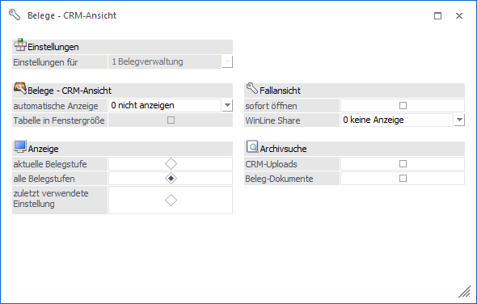
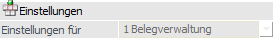
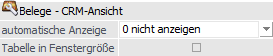
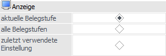
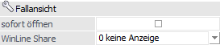
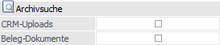

Durch Anwahl des Buttons "Einstellungen" im Programm "Belege - CRM-Ansicht" stehen diverse Optionen bzw. Einstellungen zur Verfügung.
Hinweis
Die gewählten Optionen bzw. Einstellungen werden benutzerspezifisch gespeichert.

Einstellungen

Ø Einstellungen für
An dieser Stelle wird angezeigt, für welchen Ausgangspunkt ("0 - Belegerfassung" bzw. "1 - Belegverwaltung") die folgenden Einstellungen / Vorbelegungen getroffen werden.
Belege - CRM-Ansicht

Ø automatische Anzeige
Hier kann festgelegt werden, ob bei dem Aufruf eines Belegs in der Belegerfassung oder beim Wechsel zwischen den Belegen in den Belegverwaltungsmenüpunkten das Beleg-CRM automatisch geöffnet werden soll.
ü 0 - nicht anzeigen
Das Fenster
wird nicht automatisch geöffnet
ü 1 - Belege-CRM anzeigen
Das
Fenster wird automatisch geöffnet.
ü 2 - Belege-CRM ausblenden
Das
Fenster wird nach dem Aufruf wieder automatisch geschlossen, aber alle anderen
Fenster (siehe nachfolgende Einstellungen "Fallansicht" und "Archivsuche")
bleiben geöffnet.
Ø Tabelle in Fenstergröße
Durch Aktivierung der Option "Tabelle in Fenstergröße" wird die Anzeige der CRM-Fälle im Register "Beleg" im Vollbildmodus dargestellt.
Anzeige

Ø aktuelle Belegstufe / alle Belegstufen / zuletzt verwendete Einstellung
Hier kann festgelegt werden, ob bei dem Start des Fensters der Radiobutton für "Anzeige" fix auf "aktuelle Belegstufe" oder fix auf "alle Belegstufen" gesetzt werden soll bzw. ob die zuletzt verwendete Einstellung gelten soll.
Fallansicht

Ø sofort öffnen
Durch Aktivierung der "sofort öffnen" wird automatisch die Fallansicht des ersten CRM-Falls geöffnet.
Ø WinLine Share
Mit Hilfe der Option "WinLine Share" wird anstelle der CRM-Fallansicht das WinLine Share (entweder im- "0 - Vollbild"- oder "1 - Fenster"-Modus) angezeigt.
Archivsuche

An dieser Stelle kann definiert werden, ob automatisch die Archivsuche gestartet und das Ergebnis angezeigt werden soll. Die folgenden Optionen können dabei auch in Kombination genutzt werden.
Ø CRM-Uploads
Durch Aktivierung der Option "CRM-Uploads" wird kontrolliert, ob bei den verknüpften CRM-Fällen Uploads vorhanden sind. Ist dieses der Fall, dann wird automatisch die Archivsuche gestartet und die Uploads angezeigt.
Ø Beleg-Dokumente
Durch Aktivierung der Option "Beleg-Dokumente" wird kontrolliert, ob zu dem aktuellen Beleg Dokumente hinzugefügt wurden (Drag & Drop in das Register "Kopf" der Belegerfassung oder Drag & Drop auf den Beleg in den Programmen "Belegmanagement" bzw. "Belege"). Ist dieses der Fall, dann wird automatisch die Archivsuche gestartet und die Dokumente angezeigt.